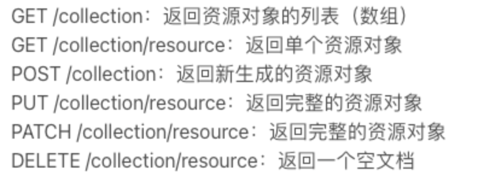

RESTful
RESTful
什么是RESTful
REST全称Representational State Transfer，意为表征性状态转移。REST指的是一组架构约束条件和原则，虽然REST本身受Web技术的影响很深， 但是理论上REST架构风格并不是绑定在HTTP上，只不过目前HTTP是唯一与REST相关的实例。
REST就是一种设计API的模式。最常用的数据格式是JSON。由于JSON能直接被JavaScript读取，所以，以JSON格式编写的REST风格的API具有简单、易读、易用的特点。
理解RESTful
结合REST原则，围绕资源展开讨论，从资源的定义、获取、表述、关联、状态变迁等角度，列举一些关键概念并加以解释。
资源与URI
REST指的是资源的表述。任何事物，只要有被引用的必要，就是一个资源。资源可以是实体，也可以只是一个抽象概念。
要让一个资源可以被识别，需要有个唯一标识，在Web中这个唯一标识就是URI。URI既可以看成是资源的地址，也可以看成是资源的名称。如果某些信息没有使用URI来表示，那它就不能算是一个资源， 只能算是资源的一些信息而已。URI的设计应该遵循可寻址性原则，具有自描述性，需要在形式上给人以直觉上的关联。
URI设计存在一些技巧：
- 使用_或-来让URI可读性更好
- 使用/来表示资源的层级关系
- 使用?用来过滤资源
- ,或;可以用来表示同级资源的关系
统一资源接口
RESTful架构应该遵循统一接口原则，统一接口包含了一组受限的预定义的操作，不论什么样的资源，都是通过使用相同的接口进行资源的访问。接口应该使用标准的HTTP方法如GET，PUT，POST和DELETE，并遵循这些方法的语义。
实践中存在一些常见问题：
Q：统一接口是否意味着不能扩展带特殊语义的方法？
A：统一接口并不阻止你扩展方法，只要方法对资源的操作有着具体的、可识别的语义即可，并能够保持整个接口的统一性。
Q：统一资源接口对URI有什么指导意义？
A：统一资源接口要求使用标准的HTTP方法对资源进行操作，所以URI只应该来表示资源的名称，而不应该包括资源的操作。通俗来说，URI不应该使用动作来描述。
Q：直接忽视缓存可取吗？
A：即使你按各个动词的原本意图来使用它们，你仍可以轻易禁止缓存机制。 最简单的做法就是在你的HTTP响应里增加这样一个报头：
Cache-control: no-cache。 但是，同时你也对失去了高效的缓存与再验证的支持(使用Etag等机制)。对于客户端来说，在为一个REST式服务实现程序客户端时，也应该充分利用现有的缓存机制，以免每次都重新获取表示。
资源的表述
上面提到，客户端通过HTTP方法可以获取资源，是吧? 不，确切的说，客户端获取的只是资源的表述而已。 资源在外界的具体呈现，可以有多种表述(或成为表现、表示)形式，在客户端和服务端之间传送的也是资源的表述，而不是资源本身。 例如文本资源可以采用html、xml、json等格式，图片可以使用PNG或JPG展现出来。
那么客户端如何知道服务端提供哪种表述形式呢？答案是可以通过HTTP内容协商，客户端可以通过Accept头请求一种特定格式的表述，服务端则通过Content-Type告诉客户端资源的表述形式。
1 | # Request |
资源的链接
我们知道REST是使用标准的HTTP方法来操作资源的，但仅仅因此就理解成带CURD的Web数据库架构就太过于简单了。 这种反模式忽略了一个核心概念："超媒体即应用状态引擎（hypermedia as the engine of application state）"。 超媒体是什么？当你浏览Web网页时，从一个连接跳到一个页面，再从另一个连接跳到另外一个页面，就是利用了超媒体的概念：把一个个把资源链接起来。 要达到这个目的，就要求在表述格式里边加入链接来引导客户端。在《RESTful Web Services》一书中，作者把这种具有链接的特性称为连通性。
1 | # Response |
很多人在设计RESTful架构时，使用很多时间来寻找漂亮的URI，而忽略了超媒体。所以，应该多花一些时间来给资源的表述提供链接，而不是专注于"资源的CRUD"。
状态的转移
有了上面的铺垫，再讨论REST里边的状态转移就会很容易理解了。
先来讨论一下REST原则中的无状态通信原则。初看一下，好像自相矛盾了，既然无状态，何来状态转移一说？其实，这里说的无状态通信原则，并不是说客户端应用不能有状态，而是指服务端不应该保存客户端状态。
应用状态和资源状态
状态应该分为应用状态和资源状态，客户端负责维护应用状态，而服务端负责维护资源状态。客户端和服务端的交互必须是无状态的，并在每一次请求中包含处理该请求所需的一切信息。服务端不需要在请求间保留应用状态，只有在接受到实际请求的时候，服务端才会关注应用状态。这种无状态通信原则，使得服务端和中介能够理解独立的请求和响应。
在多次请求中，同一客户端也不再需要依赖于同一服务器，方便实现高可扩展和高可用性的服务端。 但有时候我们会做出违反无状态通信原则的设计，例如利用Cookie跟踪某个服务端会话状态，常见的像J2EE里边的JSESSIONID。这意味着，浏览器随各次请求发出去的Cookie是被用于构建会话状态的。当然，如果Cookie保存的是一些服务器不依赖于会话状态即可验证的信息（比如认证令牌），这样的Cookie也是符合REST原则的。
应用状态的转移
"会话"状态不是作为资源状态保存在服务端的，而是被客户端作为应用状态进行跟踪的。客户端应用状态在服务端提供的超媒体的指引下发生变迁。服务端通过超媒体告诉客户端当前状态有哪些后续状态可以进入。这些类似"下一页"之类的链接起的就是这种推进状态的作用——指引你如何从当前状态进入下一个可能的状态。
实际应用层面
传统接口
不同开发者对API接口的设计习惯不同 , 比如可能会出现这种情况：
1 | 新增员工: |
以员工列表为例子，传统的web接口设计需要考虑几个要点：
1 |
|
- 请求路径——一般采用见名知意的方式，如
/employee/list - 请求方式——不在意，
@RequestMapping注解可以接受任意请求方式，包括:GET POST - 请求参数——没有固定，根据接口的功能而定， 可以说是由需求决定
- 请求响应——没有固定，由需求决定，可以是Json格式也可以页面模板
REST接口
依然是员工列表的例子：
1 |
|
- 请求路径——不再是见名知意的方式，而是由操作的资源决定，一般采用资源名称复数形式。
- 请求方式——RESTful风格接口使用资源复数作为路径，无法从路径上看出接口对资源操作，而是在HTTP请求方法上做文章。规定GET从服务器取出资源，POST在服务器新建一个资源，PUT在服务器更新整个对象，PATCH只在服务端更新个别属性，DELETE在服务器删除属性。
- 请求参数——没有固定，根据接口的功能而定， 可以说是由需求决定
- 请求响应——RESTful对响应值，还是做了细致的约定的：

RESTful接口简化
@RestController：由 @Controller + @ResponseBody组成，贴在controller
@PathVariable：通过 @PathVariable 可以将 URL 中占位符参数绑定到控制器处理方法的入参中。URL 中的 {xxx} 占位符可以通过@PathVariable(“xxx“) 绑定到操作方法的入参中，贴在请求映射方法参数上
@GetMapping：贴在请求映射方法上，等价于：@RequestMapping(method = RequestMethod.GET)
@PostMapping：贴在请求映射方法上，等价于：@RequestMapping(method = RequestMethod.POST)
@PutMapping：贴在请求映射方法上，等价于：@RequestMapping(method = RequestMethod.PUT)
@DeleteMapping：贴在请求映射方法上，等价于：@RequestMapping(method = RequestMethod.DELETE)
1 | //等价于：@ResponseBody + @Controller |
一些问题
Q：RESTful和RPC的区别？（Chat老师回答）
RESTful和RPC都是用于构建分布式系统的框架，但它们的设计思想和使用方式有所不同。
RPC(Remote Procedure Call，远程过程调用)是一种面向过程的通信模型，它让客户端调用远程服务器上的函数或方法。RPC的设计目的是将远程函数调用的过程封装起来，让调用者感觉不到远程调用的存在，像本地函数调用一样方便。RPC的强项在于网络通信效率高，但需要在客户端和服务端之间明确的定义函数调用协议。
RESTful是一种面向资源的通信模型，它将资源作为核心概念，并采用标准的HTTP方法(如GET、POST、PUT、DELETE)来操作资源。RESTful的设计目的是让客户端通过URI请求资源表述，服务器返回资源表述，让客户端根据资源表述进行后续操作。RESTful的优点在于协议设计简单易懂，并且具有良好的可扩展性。
总的来说，RPC更适合那些需要高效远程调用的场景，例如微服务架构；而RESTful更适合那些需要访问资源的场景，例如Web应用程序的API。
Q：HTTP响应状态码
200 OK - [GET]：服务器成功返回用户请求的数据。
201 CREATED - [POST/PUT/PATCH]：用户新建或修改数据成功。
202 Accepted - []：表示一个请求已经进入后台排队（异步任务）
204 NO CONTENT - [DELETE]：用户删除数据成功。
400 INVALID REQUEST - [POST/PUT/PATCH]：用户发出的请求有错误，服务器没有进行新建或修改数据的操作，该操作是幂等的。
401 Unauthorized - []：表示用户没有权限（令牌、用户名、密码错误）。
403 Forbidden - [] 表示用户得到授权（与401错误相对），但是访问是被禁止的。
404 NOT FOUND - []：用户发出的请求针对的是不存在的记录，服务器没有进行操作，该操作是幂等的。
406 Not Acceptable - [GET]：用户请求的格式不可得（比如用户请求JSON格式，但是只有XML格式）。
410 Gone -[GET]：用户请求的资源被永久删除，且不会再得到的。
422 Unprocesable entity - [POST/PUT/PATCH] 当创建一个对象时，发生一个验证错误。
500 INTERNAL SERVER ERROR - [*]：服务器发生错误，用户将无法判断发出的请求是否成功。